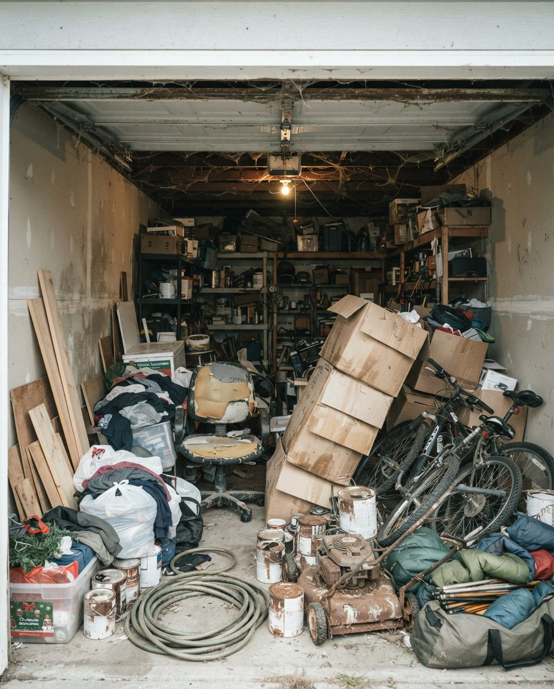

Bearspaw sits between Calgary's northwest edge and Cochrane, north of the Bow River. Springbank runs west of the city along Highway 1 toward Highway 8 and Elbow Valley. Both are in Rocky View County, both are mostly acreages on well and septic, and the County, not the City, runs the garbage and recycling sites. That changes almost every decision in a cleanout, from where the truck parks to where the old jerry cans go.
For a quote, send inquiry@garagescape.ca one photo of the driveway from the road, one of each building's door from where a truck would stop, and one of each building's inside from the doorway. Mark the septic field on a screenshot of your yard if you can. Or call (587) 804-9266 and walk us around it.
Which Buildings Are We Clearing?
A city cleanout is one garage. An acreage cleanout is usually three or four buildings, and each one fills up with a different kind of thing. We plan the day building by building, because the problems don't overlap.
| Building | What it usually holds | What we plan for |
|---|---|---|
| Attached triple garage | Household overflow: boxes from the last move, sports gear, a second fridge, the kids' bikes | Closest to the house and easiest to load. Most of it can be donated. |
| Heated shop | Workbench, hand and power tools, half-used cans of paint and solvent, used oil, batteries, parts nobody can name | The most decisions per square foot. Tools you might sell, chemicals that need sorting, and heavy steel. |
| Quonset or pole barn | Trailers, old furniture, lumber, fencing wire, tires, a lawn tractor that stopped running | Weight and bulk. Unheated and open at the ends, so mice and birds are almost certain. |
| Sea-can | Whatever didn't fit anywhere else, often sealed up for years | We open it, let it air, and check for mice before anyone goes in. |
| Barn tack room or feed room | Tack, feed bags, twine, horse-care chemicals, fly spray | Twine and feed bags recycle separately. Leather tack has a resale market if it's in good shape. |

Before the Truck Comes Up Your Driveway
In the city, the question is the lane. On an acreage, it's the yard. These are the things we ask about before we book, and they're why we want a photo of the driveway.
- Where the septic field and well are. A loaded truck doesn't belong on a septic field, and it shouldn't park beside the wellhead. We'd rather carry further than drive over either.
- The gate and the driveway. A gate code, a cattle guard, a long gravel drive with a tight turn at the top. If a box truck can't turn around at the shop, we back in, and we need to know where.
- Ground conditions. Gravel and grass yards go soft in a spring thaw or after a chinook. Many County roads carry seasonal weight restrictions in spring. In a soft week, we load from the hard-packed drive and carry, or book a cold morning.
- Winter access. A shop at the back of the property is only reachable if the path to it is ploughed. Tell us who clears your yard and when.
- Animals. Horses in a paddock beside the shop, a dog that runs the yard, livestock on the other side of a gate we'd be driving through. We close what you tell us to close.
- Which door each building uses. A quonset with one working end, a shop with an overhead door that's been blocked by a parked trailer for two years. Moving the trailer first can be half the job.
Deer Mice in Outbuildings: The First Hour
Quonsets, sea-cans and unheated shops on an acreage are where Alberta's deer mice spend the winter, and deer mice are the usual carrier of hantavirus. Alberta Health has recorded 81 cases and 15 deaths in the province since 1989. The risk comes from breathing dust from droppings, which is exactly what sweeping out a closed building stirs up.
So the first hour in any closed outbuilding follows Alberta's guidance, and it's not negotiable for our crew:
- Doors and vents open for 30 minutes before anyone goes in.
- No sweeping and no vacuuming of droppings or nests. They get soaked first with a 1:9 bleach solution or a disinfectant and left for five minutes.
- Gloves on, paper towels, sealed bags, then into a lidded bin.
- Soft goods with nesting in them go out. Mattresses, upholstered chairs, insulation batts and cardboard that mice have lived in aren't worth saving, and we tell you before we bag them.
If a building is badly infested, Alberta Health asks that you call Health Link at 811 before anyone cleans it. If the whole place has reached that point, our hoarding garage cleanup page explains how we run a longer, more careful job.
Fuel, Chemicals and Ammunition: What We Set Aside
A shop on an acreage holds things a city garage almost never does. These don't go in a garbage load, and some of them we won't move at all.
- Ammunition, powder, primers and anything explosive. Rocky View County won't accept them at any site and says they should go to a fire station, police station or RCMP detachment. We stop, photograph where it is, leave it in place and tell you. The same goes for firearms.
- Old gasoline and diesel in jerry cans. We pull them out, keep them upright and separate, and label them. Fuel is household hazardous waste, which the County takes year-round at Bragg Creek, Langdon and Irricana, the Cochrane Eco Centre and the Airdrie Recycle Depot.
- Used oil, gear oil, hydraulic fluid, antifreeze and oil filters. Kept in their original containers, unrinsed. The Springbank Transfer Site lists all of these as accepted, free.
- Unlabelled jars and unknown liquids. We don't open them and we don't mix them. They're staged together for a hazardous waste drop-off, where staff can identify them.
- Old fluorescent fixtures. Ballasts in fixtures made before about 1980 can contain PCBs, which County sites don't accept. We set those fixtures aside rather than putting them in a scrap load.
- Propane cylinders. Springbank takes tanks of 30 lb and under. Larger tanks go back to a propane supplier.
If the shop belonged to a parent who has died or moved into care, the same pause applies to paperwork, cash and anything with a name on it. Our estate garage cleanout page covers how we handle that, including when the family lives out of province.
Your Transfer-Site Run, Our Truck
Rocky View County's transfer sites are residential drop-off only, and the County says no commercial material is accepted. A lot of what's in an acreage shop recycles free at those sites, but only when you bring it. So on most acreage jobs we split the load: we stage the free-at-the-County items by your truck or trailer for one Saturday run, and our truck takes the rest.
| Item | At the County site | How we handle it |
|---|---|---|
| Tires, with or without rims | Free | Staged for your run |
| Used motor oil, gear oil, hydraulic oil, antifreeze, oil filters | Free | Staged, capped and upright |
| Household paint and aerosol paint, batteries, lightbulbs and fluorescent tubes, e-waste, fire extinguishers | Free | Staged for your run |
| Cardboard, metal, glass, plastic, paper | Free | Staged, or in our load if you'd rather not make the trip |
| Grain bags (rolled, tied with twine), plastic twine (clean, in clear bags), wire (rolled) | Free | Rolled and bagged the way the site asks |
| Bulk waste | $50 per half-ton load | Our truck |
| Household furniture | $22 per item | Donated if it's whole and clean; our truck if not |
| Fridge or freezer | $23 per compressor for refrigerant removal | Donated if it runs; our truck if not |
| Non-freon appliances | $10 | Our truck, with the scrap |
Two timing notes. The Springbank and Springhill sites switch to winter hours on November 1: Wednesdays and Saturdays, 9 a.m. to 5 p.m. And if you'd rather not make a County run at all, tell us; we'll take it, and the quote reflects it. For comparison, City of Calgary landfills charge $113 a tonne for garbage and scrap metal, and a $25 flat fee for loads under 250 kg. Our main Calgary garage cleanout page explains the City side in more detail.

Grain Bags, Twine, Wire and Tires
The farm side of an acreage has its own rules, and they're stricter about how material arrives than what it is.
- Plastic twine has to be free of hay and dirt and go in clear bags. Site staff hand out the bags.
- Grain bags have to be rolled and tied with twine.
- Fencing wire has to be rolled and free of debris. A tangle of barbed wire pulled out of a quonset corner takes time to roll, and we'd rather tell you that than leave it out of the quote.
- Empty pesticide and herbicide containers aren't accepted by the County any more. They go back to the retailer.
- Unused pesticides and herbicides with a readable label go to an Agriculture Roundup. Springbank, Bragg Creek, Springhill, Irricana, Langdon and Airdrie transfer sites take agricultural materials year-round.
- Branches under 6 inches go to the yard waste pile at Springbank from May 1 to October 31. Stumps count as garbage.
Once the buildings are empty, the slabs usually need attention too. Shop floors carry decades of oil and the attached garage carries road salt from Highway 1 and Highway 1A. Our garage floor cleaning service handles that as a second visit, and if a renovation is what emptied the shop, see post-renovation garage cleanup.
What Moves an Acreage Quote
We don't publish a flat price for acreage work. Two properties on the same road can be very different jobs. These are the factors, roughly in order of how much they matter.
- Number of buildings. Each one has its own door, its own mice check and its own sort.
- Distance from each door to the truck. A shop the truck can back up to is quick. A sea-can across a soft paddock is not.
- Weight. Steel, lumber, old furniture and soaked cardboard are charged by the tonne wherever they go.
- Sorting time with you. A shop full of tools you might want to sell takes longer than one you've already picked through.
- The split. If you make the County run for tires, oil and farm plastics, our load is smaller and so is the quote.
- The drive. Bearspaw and Springbank are outside the city, and the round trip to a City landfill is part of the day.
If the acreage is going on the market, the timing matters as much as the price. Our garage cleanout before selling page covers working back from listing photos and possession day.
Where this page applies
Bearspaw, Springbank, Elbow Valley and the acreages along Highway 1, Highway 1A and Highway 8, plus the rest of Rocky View County within reach of Calgary. Inside the city, see garage cleanout in Calgary, or Mount Royal and Elbow Park for older lane garages. Just inside the city line, front-drive houses in Springbank Hill, Aspen Woods and West Springs are on garage cleanout in Aspen Woods and Springbank Hill. Near Cochrane, our Cochrane garage decluttering page covers the town. If the shop is clear and you want it set up properly, see garage and shop organization in Bearspaw.